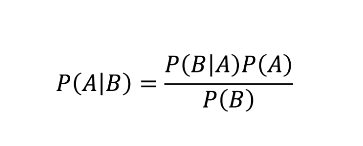
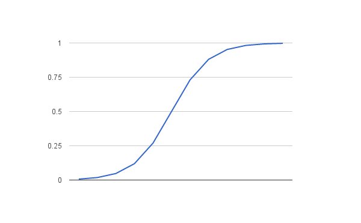
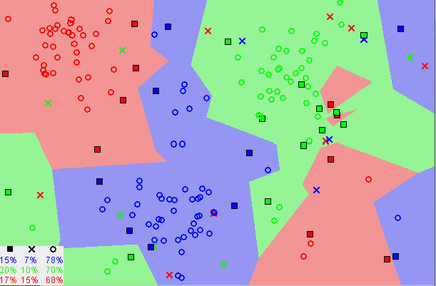

20.080.RiOS.CS
Predicting the Outcome of NBA Games Using Machine Learning Methods
Research Plan
| STUDENT NAMES Kristofer Tsai | SCHOOL NUS High School |
| External MENTOR Allison Liemhetcharat | External INSTITUTION rideOS |
| NUS High Teacher Mentor Chiam Sher-Yi |
| TITLE OF PROJECT Predicting the outcome of NBA games with machine learning |
| PURPOSE OF RESEARCH To investigate how to better predict the outcome of NBA games with machine learning methods |
| METHODOLOGY Extract Data from stats.nba.com using api- nba Analyse data using WEKA software Refining data |
| LIST OF EXPERIMENTAL TECHNIQUES USED Machine Learning API Data Extraction |
| BIBLIOGRAPHY Avalon, G and others (2016). Various Machine Learning Approaches to Predicting NBA Score Margins. http://cs229.stanford.edu/proj2016/report/Avalon_balci_guzman_various_ml_approaches_NBA_Scores_report.pdf D. Miljkovic , L. Gajic, A. Kovacevic and Z. Konjovic , "The use of data mining for basketball matches outcomes prediction," In 8 th International Symposium on Intelligent Systems and Informatics, 309-312, 2010. J. Uudmae , “Predicting NBA Game Outcomes,” Retrieved from http://cs229.stanford.edu/proj2017/final-reports/5231214.pdf . G. Avalon, B. Balci , J. Guzman, “Various Machine Learning Approaches to Predicting NBA Score Margins,” Retrieved from http://cs229.stanford.edu/proj2016/report/Avalon_balci_guzman_various_ml_approaches_NBA_Scores_report.pdf . Fabian Pedregosa , Gaël Varoquaux , Alexandre Gramfort , Vincent Michel, Bertrand Thirion , Olivier Grisel, Mathieu Blondel, Peter Prettenhofer , Ron Weiss, Vincent Dubourg , Jake Vanderplas , Alexandre Passos , David Cournapeau , Matthieu Brucher , Matthieu Perrot, Édouard Duchesnay ; Scikit-learn: Machine Learning in Python. 12(Oct):28252830, 2011. |
Abstract
There are 30 teams in the National Basketball Association (NBA). In a basketball match, a line-up of 5 players from the home team plays against another line-up of 5 players from the away team. To predict the outcome of an NBA game, previous research utilises methods including an Adversarial Synergy Graph Model, an Entropy principle as well as Neural Network Regression methods. In this paper, we utilise the Waikato Environment for Knowledge Analysis (WEKA) open-source machine learning software to predict the outcome of NBA Games. WEKA contains a plethora of built-in tools for standard machine learning tasks giving us the ability to efficiently study multiple team statistics using a variety of machine learning methods. As compared to previous methods of studying game scores alone, singling out precise team statistics allow for a more customised and in-depth analysis of a single NBA game. Classification via regression and J48 trees gave the highest F-Measure scores when using a single stat “Game Result”. There was a noticeable spike in F-Measure when Naïve Bayes was used together with game result and three-point percentage attributes
Introduction
There are a total of 30 teams in the National Basketball Association (NBA). It is composed of 29 American teams and 1 Canadian team. The NBA is one of the four major professional sports leagues in the United States and Canada. It is the premier men's professional basketball league in the world. In a basketball match, a line-up of 5 players from the home team plays against another line-up of 5 players from the away team. To win a game of basketball, teams have to outscore the opposing teams by shooting the basketball into the hoop and scoring more points than the opposing team. A game of basketball can be affected by numerous elements, resulting in a high amount of uncertainty in each game. These elements include:player ability, team coordination, coaching strategy, physical condition, equipment quality, etc. To accurately predict how 10 unique humans will react to every unique scenario is quite difficult. Completely unexpected scenarios have occurred in the NBA before, e.g., Cleveland Cavaliers Guard JR Smith running out the clock in the 2018 NBA Finals when the game is tied,Houston Rockets Guard Tracy Mcgrady scoring 13 points in 35 seconds back in 2004 against the San Antonio Spurs.
Nevertheless, there are relationships present between previous game performances that can help to better predict the outcome of an upcoming NBA Game. An example of this is the 2018 NBA finals between the Golden State Warriors and Cleveland Cavaliers [1]. The Warriors performed better in the majority of stats including effective field goal percentage and had a lower turnover rate in the first 3 games of the series. Up 3-0 against the Cavaliers, the stats strongly suggested a 4-game sweep for the Warriors. Because of this, bettors were extremely confident that the Warriors would win. The Warriors sat at a -900 Vegas odds, meaning that bettors had to bet $900 on the Warriors to receive a $100 profit payout. True enough, the Warriors defeated the Cavaliers 108-85 in Game 4, taking the 2018 NBA championship.
In this paper, we are interested in identifying the relationships between specific statistics of NBA games and the outcome of future games. We will focus on a diversity of features and machine learning methods. To do so, multiple steps need to be taken to ingest and process the data before fitting the data into the Waikato Environment for Knowledge Analysis (WEKA)[2] software. First, data needs to be extracted from a reliable online NBA source. Second, the data must be reformatted into a readable comma-separated values (CSV) format for the WEKA software. The WEKA software allows us to analyze the features and efficiently run tests repeatedly. With a large data set and multiple filters, we will filter for better-performing features by starting with a single machine-learning method. The results were measured using the F-Measure [3], which will be elaborated on later. F-Measures obtained often ranged from the mid-0.5 to the low-0.6 range.
Methodology
In order to predict the outcome of NBA games with machine learning methods, we chose to study relationships between detailed basketball statistics and game outcomes. The methodology can be broken down into 3 sections:
1. Extracting the data
2. Reformatting the data
3. Analysing the data
The data was extracted using a third-party API, that gave us access to an NBA data library. The data extracted was in the JavaScript Object Notation (JSON) format. However, WEKA is only able to read the data in a Comma-separated values(CSV) format. Thus, there was a need to reformat the data. The last step would be to analyse the data using the WEKA software. We tried out different combinations of parameters and attributes to learn more about the relationship between various statistics and outcome of games.
The extraction of data was achieved using an Application Programming Interface (API). The API used was “API-NBA'' [4], a freemium API developed by api-sports, verified by the Rapid-API community. Using Python code, a total of 1231 requests were sent to extract all the game data in the 2018-2019 NBA season. NBA seasons typically start after the summer break around October of 2018 and ends around April 2019. This season was selected as certain schedule and data was incomplete in the 2019-2020 season due to the coronavirus pandemic. Out of the 1231 requests, 1219 requests were successful. The data from Game IDs 4640-4650 and 5065 could not be found, the API returned a blank result. This should not significantly affect the results of the experiment as it will only decrease the sample size. In testing, team IDs are treated as nominal, so teams are treated as separate variables with no numeric value. Doing so allows WEKA to test teams independently with machine learning methods. WEKA will ignore the removal of game IDs 4640-4650 and 5065 by treating the next previous game ID as the next attribute to be tested.
The sourced data was returned in a JSON format. The data extracted has to be converted from JSON to CSV as WEKA does not process data in the JSON format. The JSON data was flattened and saved into a CSV file through Python. JSON is a lightweight data-interchange format, commonly used for transmitting data in web applications. It is a standard text-based format for representing structured data based on JavaScript object syntax. Data in a JSON format is sorted as if it is a container among containers of data, allowing users to dig deeper for information. A CSV file is a delimited text file that uses a comma to separate values. Each line of the file is a data record. Each record consists of one or more fields, separated by commas. Converting data from JSON format to a CSV format (Appendix A) causes the data to lose hierarchical structure but makes the data more compact and understandable by WEKA.
The 54 attributes (Appendix B) present in the final CSV file are listed in the first two columns in the table below. To study the differences between the stats of the home and away teams, we used Excel to calculate the differences. Each difference is calculated by subtracting the away attribute from the home attribute. For example, PointsInPaintDiff = HomePointsInPaint - AwayPointsinPaint. Doing so generated 26 new attributes:
In the WEKA Software for all new 26 attributes, we individually ran each feature through a J48 tree to predict the outcome of the game. J48 is an open-source Java implementation of the C4.5 algorithm in the WEKA data mining tool. C4.5 is an algorithm used to generate a decision tree developed by Ross Quinlan. C4.5 is an extension of Quinlan's earlier ID3 algorithm. The J48 tree was selected as the starting point as the project as it’s algorithm, the C4.5, is one of the most popular classifiers in the data analysis community. C4.5 became quite popular after ranking #1 in the Top 10 Algorithms in Data Mining pre-eminent paper published by Springer LNCS in 2008 [5]. After completing running the 26 features through the J48 tree, we looked at the F-measure average for all 26 results and selected the top 5 features.
The F-measure is a measure of a test's accuracy. It is calculated from the precision and recall of the test. Precision is the number of correctly identified positive results divided by the number of all positive results, including those identified incorrectly. Recall is the number of correctly identified positive results divided by the number of all samples that should have been identified as positive. An F-measure that is a harmonic mean between precision and recall, favouring neither precision nor recall in calculations. WEKA produces an F-measure for accurately classifying an attribute into “1” or “0”. “1” outcome means that the home team wins the game, while a “0” outcome means that the home team loses the game. The F-measure seen below in the data are averages of F-measure from predicting “1” and “0” outcome.
Of the top five features, we had to find the most useful combination of features. We decided to run a 5-choose-1 (5C1), 5C2, and 5C3 system for all the top five features. From all 25 possible combinations, we filtered down to the top five combinations with the highest F-Measure. From there, we tested these combinations with various traceback numbers. The traceback number in this instance is the number of previous games used to predict the outcome of the next game. We tested traceback numbers of 3 and 10. For example, the default traceback number in the previous steps is 5. That means the algorithm uses features from games 1, 2, 3, 4, and 5 to predict the outcome of game 6.
The next step was to select the top 5 combination of features regardless of traceback number. So far, we have been using the J48 tree. We were keen to look into testing these combinations of features with various types of machine learning algorithms. WEKA offers a variety of classifiers to predict a win loss outcome. These types of classifiers include Bayes, functions, lazy, meta, rules and trees. From each type of classifier, we will select a specific classifier from that type to run tests on. The selected classifiers specifically are Naive Bayes [6], Logistic [7], IBk [8], Classification via Regression [9], PART [10] and J48 [11]. More information on the classifiers can be found in Appendix C. I have chosen Naive Bayes as a benchmark to compare to previous research papers mentioned earlier. For the remaining 4, I have chosen them as they are popular classifiers that have yet to be used in predicting the outcome of an NBA game. Data/Analysis
In this section, we present and discuss the experimental findings from each step.
Table 1: 5 Features with the highest F-Measure
| Game Result | FGM Diff | FTP Diff | Personal Foul Diff | TPP Diff |
| 0.607 | 0.584 | 0.576 | 0.575 | 0.568 |
Table 1 depicts the 5 features with the highest F-Measure after running it through a default setting J48 tree with 10-fold cross validation. Traceback was still kept at 5. The game result refers to the home team winning or losing the game. FGM in full is Field Goals Made. A field goal is a basket scored on any shot or tap other than a free throw, worth two or three points depending on the distance of the attempt from the basket. FTP in full is Free Throw Percentage. A free throw is an unopposed attempt to score a point by shooting from behind the free throw line. TPP in full is Three Point Percentage. A three-point field goal is a field goal made from beyond the three-point line.
Table 2: F-Measures of various combinations of the top 5 features
| Attributes | F-Measure (Traceback 5) | Att r ibutes (Continued) | F-Measure (Traceback 5) | Attributes (Continued) | F-Measure (Traceback 5) |
| Game Result - FTP Diff - TPP Diff | 0.58 | FTP Diff - TPP DIff | 0.557 | Personal Foul DIff - TPP Diff | 0.543 |
| FGM Diff - FTP Diff | 0.571 | FGM Diff - FTP Diff - TPP Diff | 0.557 | Game Result - Personal Foul DIff - TPP Diff | 0.54 |
| Game Result - FTP Diff | 0.567 | Game Result - FGM Diff - FTP Diff | 0.555 | Game Result - FGM Diff | 0.539 |
| FGM Diff - Personal Foul Diff | 0.564 | FGM Diff - Personal Foul Diff - TPP Diff | 0.555 | Game Result - FGM Diff - Personal Foul Diff | 0.536 |
| Game Result - TPP Diff | 0.563 | FTP Diff - Personal Foul Diff | 0.554 | FTP Diff - Personal Foul Diff - TPP Diff | 0.535 |
| Game Result - Personal Foul DIff | 0.559 | FGM Diff - TPP Diff | 0.552 | Game Result - FGM Diff - TPP Diff | 0.532 |
| FGM Diff - FTP Diff - Personal Foul Diff | 0.559 | Game Result - FTP Diff - Personal Foul DIff | 0.549 | - | - |
Table 2 shows the F-Measures of various combinations of the top 5 features. Features were combined in a systematic 5C2 and 5C3 method and tested in identical conditions. A J48 tree was used in default settings with 10 folds cross validation. Traceback was kept at 5.
Table 3: F measures of the top 5 combinations with various traceback numbers
| Attributes | F-Measure (Traceback 5) | F-Measure (Traceback 3) | F-Measure (Traceback 10) |
| Game Result | 0.607 | 0.610 | 0.550 |
| FGM Diff | 0.584 | 0.562 | 0.556 |
| Game Result - FTP Diff - TPP Diff | 0.58 0 | 0.56 0 | 0.565 |
| FTP Diff | 0.576 | 0.551 | 0.548 |
| Personal Foul Diff | 0.575 | 0.561 | 0.535 |
Table 3 presents the F measures of the top 5 combinations with various traceback numbers. Traceback 5 performed better in every combination except for game result alone. Traceback 3 showed the best performance when using game result as the only feature. Traceback 10 had F-Measures lower than that of both traceback 3 and 5. This suggests that it is better to make predictions over short term performances than long term performances.A reason could be because the performance of NBA teams can change easily over a short period of time.
Table 2 and 3 suggests that adding combinations of features together did not provide a significant boost to the F-Measure. Adding additional features could have generated more false positives and false negatives when testing by confusing the machine algorithm more. For the J48 tree, it can be inferred that using singular features could give a slightly better prediction than using a combination of features. In the later parts, we explore that different classifiers can boost the F-Measure for various combinations of features.
Table 4 shows the top 5 F-Measures regardless of combination. These were also tested with a J48 tree under 10-foldcross validation.
Table 4: F measures of the top 5 combinations regardless of traceback numbers
| Game Result (Traceback 3) | 0.610 |
| Game Result (Traceback 5) | 0.607 |
| FGM Diff (Traceback 5) | 0.584 |
| Game Result - FTP Diff - TPP Diff (Traceback 5) | 0.58 0 |
| FTP Diff (Traceback 5) | 0.576 |
Table 5: 5 selected combinations of features, tested against 6 different types of classifiers
| Classifier Type | Bayes | Functions | Lazy | Meta | Rules | Trees |
| Classifier | NaiveBayes | Logistic | IBk | Classification via Regression | PART | J48 |
| Game Result (Traceback 3) | 0.570 | 0.591 | 0.572 | 0.608 | 0.600 | 0.610 |
| Game Result (Traceback 5) | 0.567 | 0.600 | 0.547 | 0.587 | 0.581 | 0.607 |
| FGM Diff (Traceback 5) | 0.581 | 0.575 | 0.602 | 0.573 | 0.573 | 0.584 |
| Game Result - FTP Diff - TPP Diff (Traceback 5) | 0.582 | 0.590 | 0.507 | 0.577 | 0.585 | 0.58 |
| FTP Diff (Traceback 5) | 0.574 | 0.570 | 0.569 | 0.569 | 0.575 | 0.576 |
Table 5 contains the information for the 5 selected combinations of features, tested against 6 different types of classifiers. The 6 different classifiers are NaiveBayes, Logistic, IBk,Classification via Regression, PART and J48. Game Result (Traceback 3) had the highest F-Measure score in 3 out of the 6 classifier types. This could be because there is a greater correlation between short term past performances than long term past performances. More recognisable patterns create less confusion when classifiers try to predict the game outcome. Other features with traceback 5 performed comparatively better than game result (Traceback 3) in Naive Bayes, Logistic and IBk classifiers. In this experiment, we found it difficult to achieve an F-Measure greater than 0.600. This could be because a using a traceback of 3 or 5 would only require 1 or 2 errors in predicting the outcome to drop both precision and recalls to around 0.5 to 0.6. As such, any F-Measure above 0.57 is already considered desirable.
Additional tests
We tested out a few other high scoring combinations of features on the classifiers present in table 5. The data can be found below.
Table 6: Top 5 F-Measures for additional tests
| Attributes | F-Measure (Recall 5) | F-Measure (Recall 3) | F- Measure( Recall 10) |
| FGM Diff - FTP Diff | 0.571 | 0.542 | 0.555 |
| Game Result - FTP Diff | 0.567 | 0.581 | 0.533 |
| FGM Diff - Personal Foul Diff | 0.564 | 0.561 | 0.523 |
| Game Result - TPP Diff | 0.563 | 0.573 | 0.549 |
Table 7:Additional combinations of features, tested against the same 6 classifiers
| Type | Bayes | Functions | Lazy | Meta | Rules | Trees |
| Classifier | Naïve Bayes | Logistic | IBk | Classification via Regression | PART | J48 |
| Game Result - FTP Diff (Recall 3) | 0.569 | 0.589 | 0.552 | 0.601 | 0.559 | 0.581 |
| Game Result - TPP Diff (Recall 3) | 0.563 | 0.592 | 0.523 | 0.605 | 0.556 | 0.573 |
| FGM Diff - FTP Diff (Recall 5) | 0.584 | 0.587 | 0.563 | 0.585 | 0.572 | 0.571 |
| Game Result - FTP Diff (Recall 5) | 0.574 | 0.600 | 0.535 | 0.585 | 0.538 | 0.567 |
Table 7 contains the additional combinations of features, tested against 6 different types of classifiers. While this step might have been in addition to the original methodology, it is worth noting down some observations made here. Two most significant observations are that the J48 classifier generated higher F-Measures for single feature tests while Naïve Bayes generated higher F-Measures for multi feature tests. The reason behind this could lie behind the mechanics of the two classifiers and provides potential for future discussion.
Discussion and Future Work
Game result with traceback of 3 games proved to be the most reliable attribute by obtaining the highest F-Measure in 3 of the 6 classifiers. It performed considerably well when tested with classification via regression and J48 classifiers. The mechanics of these algorithms have likely favoured the structure of the data. The additional tests also gave bonus insights with regards to attributes using a slightly larger traceback number. The Naïve Bayes classifier performed better than the rest when attempting to predict the outcome of these games using a traceback of 5. Additional tests have pointed to using three-point percentage as a reliable attribute to predict games. Game result and three-point percentage at a traceback of 5 had the highest F-measure in two classifiers, Naïve Bayes and IBk. We strongly believe that there is potential in these classifiers and attributes due to the style of NBA game today. NBA teams have turned towards three-pointers and pace to gain an edge over opponents; thus the three-point percentage attribute could play a crucial role in future predictions of NBA games.
The dataset could be expanded in future research to give more reliable insight of current NBA trends. A wider range of classifiers can also be used with an even greater combination of features to learn more about how machine learning algorithms behave with unique classifiers. To dive deeper into the capabilities of machine learning, future research can utilise deep learning methods on NBA trends. Future work can also investigate the specifics of these machine learning methods and understand why some perform better with a greater traceback number. Exploring various machine learning methods has proven to show that machine learning can be applied to anything with data. Whether it is predicting a numerical value or an outcome, machine learning can allow us to see patterns in data more efficiently and analyse relationships between data better. For example, in the financial market, active traders and investors keep an eagle eye on the share price of various companies, funds and indexes. Machine learning algorithms can take previous data to predict the future share price of these financial assets. For example, classifiers can predict two outcomes, if the share price will go up or down, while regressors can predict the exact future price of these financial assets. Quantitative analysis has already been in use in financial markets for decades, however the potential it possesses to predict future values together with machine learning is untapped.
Conclusion
It can be concluded that sticking to game results with a small traceback number can lead to a higher F-Measure when using classification via regression and J48 trees. However, there was a noticeable spike in F-Measure when Naïve Bayes was used together with game result and three-point percentage attributes. This falls in line with today’s game of high pace and greater three-point attempts in the NBA. However, the Naïve Bayes classifier had a F-Measure was not the highest F-Measure present, it likely requires greater fine tuning of parameter and more exploration of various attributes to boost its F-Measure and seek hidden patterns in predicting NBA games today.
References:
“2018 NBA Finals - Cavaliers vs. Warriors.” Basketball. Accessed December 26, 2020. https://www.basketball-reference.com/playoffs/2018-nba-finals-cavaliers-vs-warriors.html.
“WEKA.” Weka 3 - Data Mining with Open Source Machine Learning Software in Java. Accessed December 26, 2020. https://www.cs.waikato.ac.nz/~ml/weka/index.html.
Sasaki, Yutaka. “The Truth of the F-Measure,” October 26, 2007. https://www.toyota-ti.ac.jp/Lab/Denshi/COIN/people/yutaka.sasaki/F-measure-YS-26Oct07.pdf.
Api-sports. “API-NBA”. https://rapidapi.com/api-sports/api/api-nba/details.
Wu, Xindong. “Top 10 Algorithms in Data Mining.” Accessed December 26, 2020. http://home.etf.rs/~vm/os/dmsw/Top10DMAlgorithms.pdf.
NaiveBayes (weka-dev 3.9.5 API), December 21, 2020. https://weka.sourceforge.io/doc.dev/weka/classifiers/bayes/NaiveBayes.html.
Logistic (weka-dev 3.9.5 API), December 21, 2020. https://weka.sourceforge.io/doc.dev/weka/classifiers/functions/Logistic.html.
IBk (weka-dev 3.9.5 API), December 21, 2020. https://weka.sourceforge.io/doc.dev/weka/classifiers/lazy/IBk.html.
ClassificationViaRegression (weka-dev 3.9.5 API), December 21, 2020. https://weka.sourceforge.io/doc.dev/weka/classifiers/meta/ClassificationViaRegression.html.
PART (weka-dev 3.9.5 API), December 21, 2020. https://weka.sourceforge.io/doc.dev/weka/classifiers/rules/PART.html.
J48 (weka-dev 3.9.5 API), December 21, 2020. https://weka.sourceforge.io/doc.dev/weka/classifiers/trees/J48.html.
Appendix A
Here is an example of the data from Game 4387 in a JSON format:
| { " api ": { "filters": [ " gameId " ], "message": "GET statistics/games/ gameId /4387", "results": 2, "statistics": [ { "assists": "21", " biggestLead ": "18", "blocks": "5", " defReb ": "43", " fastBreakPoints ": "6", " fga ": "97", " fgm ": "42", " fgp ": "43.3", " fta ": "14", " ftm ": "10", "ftp": "71.4", " gameId ": "4387", " longestRun ": "10", "min": "240:00", " offReb ": "12", " pFouls ": "20", " plusMinus ": "18", "points": "105", " pointsInPaint ": "34", " pointsOffTurnovers ": "14", " secondChancePoints ": "14", "steals": "7", " teamId ": "2", " totReb ": "55", " tpa ": "37", " tpm ": "11", " tpp ": "29.7", "turnovers": "14" }, | { "assists": "18", " biggestLead ": "4", "blocks": "5", " defReb ": "41", " fastBreakPoints ": "16", " fga ": "87", " fgm ": "34", " fgp ": "39.1", " fta ": "23", " ftm ": "14", "ftp": "60.9", " gameId ": "4387", " longestRun ": "10", "min": "240:00", " offReb ": "6", " pFouls ": "20", " plusMinus ": "-18", "points": "87", " pointsInPaint ": "50", " pointsOffTurnovers ": "11", " secondChancePoints ": "5", "steals": "8", " teamId ": "27", " totReb ": "47", " tpa ": "26", " tpm ": "5", " tpp ": "19.2", "turnovers": "16" } ], "status": 200 } } |
Here is the same data, presented in a CSV format:
| "status","message","results","filters__","statistics__gameId","statistics__teamId","statistics__fastBreakPoints","statistics__pointsInPaint","statistics__biggestLead","statistics__secon dChancePoints","statistics__pointsOffTurnovers","statistics__longestRun","statistics__points","statistics__fgm","statistics__fga","statistics__fgp","statistics__ftm","statistics__fta","statistics__ftp","statistics__tpm","statistics__tpa","statistics__tpp","statistics__offReb","statistics__defReb","statistics__totReb","statistics__assists","statistics__pFouls","statistics__steals","statistics__turnovers","statistics__blocks","statistics__plusMinus","statistics__min""200","GETstatistics/games/gameId/4387","2","gameId","4387","2","6","34","18","14","14","10","105","42","97","43.3","10","14","71.4","11","37","29.7","12","43","55","21","20","7","14","5","18","240:00" |
Appendix B
| Home Stats | Away Stats | Difference Stats |
| home_teamId | away_teamId | - |
| home_fastBreakPoints | away_fastBreakPoints | FastBreakPointDiff |
| home_pointsInPaint | away_pointsInPaint | PointsInPaintDiff |
| home_biggestLead | away_biggestLead | BiggestLeadDiff |
| home_secondChancePoints | away_secondChancePoints | SecondChancePointDiff |
| home_pointsOffTurnovers | away_pointsOffTurnovers | PointsoffTurnoverDiff |
| home_longestRun | away_longestRun | LongestRunDiff |
| home_points | away_points | PointDifferential / GameResult |
| home_fgm | away_fgm | FGMDiff |
| home_fga | away_fga | FGADiff |
| home_fgp | away_fgp | FGPDiff |
| home_ftm | away_ftm | FTMDiff |
| home_fta | away_fta | FTADiff |
| home_ftp | away_ftp | FTPDiff |
| home_tpm | away_tpm | TPMDiff |
| home_tpa | away_tpa | TPADiff |
| home_tpp | away_tpp | TPPDiff |
| home_offReb | away_offReb | OffRebDiff |
| home_defReb | away_defReb | DefRebDiff |
| home_totReb | away_totReb | TotRebDiff |
| home_assists | away_assists | AssistDiff |
| home_pFouls | away_pFouls | PFoulDiff |
| home_steals | away_steals | StealDIff |
| home_turnovers | away_turnovers | TurnoverDiff |
| home_blocks | away_blocks | BlockDiff |
| home_plusMinus | away_plusMinus | PlusMinusDiff |
Appendix C
Explanation of classifiers
The numeric value of the F-Measure could be due to the differences in classifiers. Each classifier has its own advantages and disadvantages. The Naïve Bayes classifier utilises Bayes theorem. Bayes theorem calculates the conditional probability of the occurrence of an event based on prior knowledge of conditions that might be related to the event.
Image 1:

Image 1 shows the equation of Bayes theorem. P(A|B) is known as the likelihood, which is the probability of A being true given that B is true. P(B|A) is known as the posterior, which is the probability of B being true given that A is true. P(A) is the prior, which is the probability of outcome A to be true. P(B) is the marginalisation, which is the probability of outcome B to be true.
The Logistic classifier’s core is the logistic function. Weka’s classifier uses a multinomial logistic regression model with a ridge estimator.
Image 2:

Image 2 represents the logistic function curve. Logistic regression uses an equation as the representation, very much like linear regression. Input values are combined linearly using weights or coefficient values to predict an output value. A key difference from linear regression is that the output value being modelled are binary values (0 or 1) rather than a numeric value. Logistic regression equation: y= e^(b0 + b1*x) / (1 + e^(b0 + b1*x)). Where y is the predicted output, b0 is the bias or intercept term and b1 is the coefficient for the single input value. Each column in your input data has an associated b coefficient that must be learned from your training data. The actual representation of the model that you would store in memory or in a file are the coefficients in the equation (the beta value or b’s).
IBk classifier uses the k-nearest neighbors (KNN) algorithm.
Picture 3:

Picture 3 shows an example of a spread of data points. Data points can be located far or near each other. The KNN algorithm captures the idea of similarity among data points by calculating the distance between each other. Finally, the algorithm votes for the most frequent label (in the case of classification) and makes its prediction. In this paper, we used a K value of 1, which might create instability among data points but increases efficiency.
Classification via regression
Classification via regression is a modified version of simple linear regression. Class for doing classification using regression methods. Class is binarized (1 or 0) and one regression model is built for each class value. After building the model, the classifier is then able to attempt a prediction of outcome based on its trained model.
J48
J48 (aka C4.5) uses an up to down, recursive, divide-and-conquer method to find a good attribute to split on at each stage of its process. The process begins by dividing the data into two subsets with minimal mixture. In the context of this experiment, the algorithm will attempt to cleanly split the data with “1” outcomes in one side and “0” outcomes on the other side, using a classifier.
Take the example of training a J48 tree using the outcome of 8 games, 4 wins and 4 losses. “1” and “0” mean win and loss outcomes respectively. The tree could perform something like this:
If total points > 100, outcome = 1, 1, 1, 0. (Subset 1)
If total points <= 100, outcome = 0, 0, 0, 1. (Subset 2)
A perfect split is almost impossible considering the amount of uncertainty in each game. The algorithm will attempt to split the data again. J48 will continue until the subset only contains one type of classifier. Ideally, the smaller the tree the better. After training the tree, the test set will be tested on the tree. From there precision, recall and F-Measure can be calculated.
PART
The PART algorithm is similar to a J48 tree, the main difference being that PART is a partial decision tree algorithm that does not require global optimisation like the J48 tree. It builds a partial C4.5 decision tree in each iteration and makes the "best" leaf into a rule. The main advantage of PART over the J48 is not performance but its simplicity, without any need for global optimisation. Global optimization refers to finding the optimal value of a given function among all possible solution. Removing the need to run global optimisation can help to reduce training and testing time.